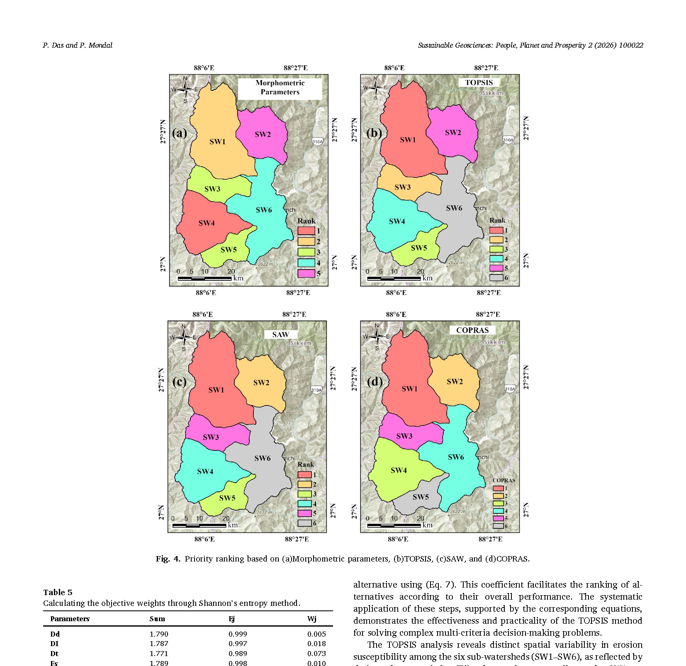
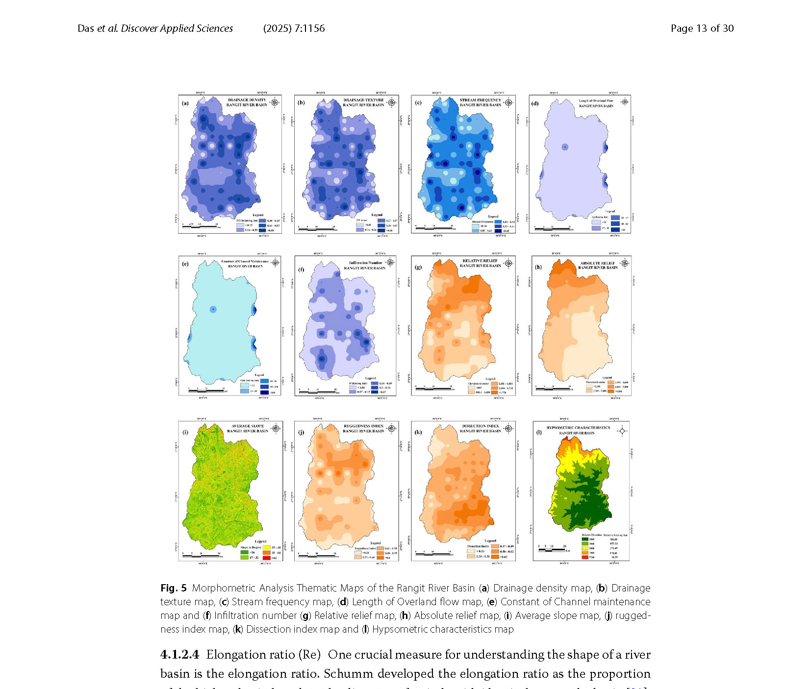

Pintu Das
Research Scholar, Raiganj University
A passionate PhD researcher with a strong foundation in Fluvial Geomorphology, currently driven by a core interest in multi-hazard risk modeling. My doctoral work aims to develop effective disaster management frameworks using RS/GIS, MCDM, Machine Learning(ML) and Deep Learning(DL).
About Me
Academic Background & ExpertiseI have recently embarked on my doctoral journey as a PhD Research Scholar at Raiganj University, specializing in Geography and Environmental Science. Building upon a strong academic foundation in Fluvial Geomorphology, my research focuses on the "Geospatial Modelling of Multi-Hazard Risk in the Rangit River Basin: Integrating Flood and Landslide Modelling."
I am deeply passionate about bridging the gap between traditional geographical studies and modern computational intelligence. My work involves the application of Geographic Information Systems (GIS), Remote Sensing, Machine Learning (ML), Deep Learning (DL), and Multi-Criteria Decision-Making (MCDM) techniques to model complex hydrological behaviors and evaluate environmental vulnerabilities.
Although I am at the early stages of my PhD, I am actively contributing to the academic community. I have already published two peer-reviewed research papers and presented my ongoing work at academic seminars. Moving forward, my ultimate goal is to develop robust, geospatial decision-support frameworks that can aid in sustainable disaster management in the ecologically fragile Eastern Himalayas.
Technical Skills & Tools
Academic Journey
Education, Seminars & ConferencesEducation Background
Ph.D. in Geography
Raiganj University
Research Focus: Geospatial Modelling of Multi-Hazard Risk in the Rangit River Basin: Integrating Flood and Landslide Modelling.
B.Ed. in Geography
Baba Saheb Ambedkar Education University
Methodology Subject: Geography | Achieved: 84.60%
M.Sc. in Geography
Raiganj University
Special Paper: Fluvial Geomorphology | Post-Graduated 1st Class with Distinction (83%)
Seminars & Conferences
Ecosystem Restoration, Disaster Risk Reduction and Resilient Society in Changing Climate
Organized by: University of Burdwan
Presented Paper: Prioritization of Sub-Watersheds for Soil Erosion Management in the Rangit River Basin: A Morphometric and Multi-Criteria Decision-Making Approach
My Research Works
Selected Publications & Studies
Prioritization of sub-watersheds for soil erosion management in the Rangit River Basin: A morphometric and multi-criteria decision-making approach
An integrated Multi-Criteria Decision-Making (MCDM) framework utilizing TOPSIS, SAW, and COPRAS alongside Shannon's entropy method to analyze erosion susceptibility and prioritize sub-watersheds (SW1-SW6) for targeted conservation.
View Publication (DOI)
Integrated morphometric and machine learning-based flood risk assessment in the Rangit river sub-watersheds, Eastern Himalayas
A comprehensive investigation of the Rangit River Basin to clarify hydrological behavior using morphometric analysis and ML algorithms to prioritize sub-watersheds.
View Publication (DOI)Qualifications & Certifications
Diplomas and Professional TrainingOne Year Diploma in Software Application
WEBEL
RS & GIS Applications in Natural Resource Management
IIRS, ISRO
Deep Learning in Ecological Studies
IIRS, ISRO
Archival and Access of the Space Science Data
IIRS, ISRO
Geospatial Technology for Modelling of Urban Environment
IIRS, ISRO
Primer on Interferometric SAR Remote Sensing
CEOS (ISRO, NASA, ESA, UN-SPIDER)
Comprehensive Disaster Risk Management Framework
NIDM
Earthquake Risk Reduction
NIDM
Safe Cities
NIDM
Let's Collaborate
I am always open to discussing academic research, geospatial modeling collaborations, or potential data science projects.
dpintu240@gmail.com